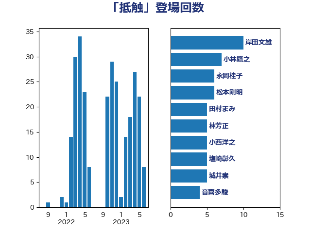

単語「抵触」

| 岸田文雄 | 自由民主党 | 10 回 |
| 小林鷹之 | 自由民主党 | 7 回 |
| 永岡桂子 | 自由民主党 | 6 回 |
| 松本剛明 | 自由民主党 | 6 回 |
| 田村まみ | 国民民主党 | 5 回 |
| 林芳正 | 自由民主党 | 5 回 |
| 小西洋之 | 立憲民主党 | 5 回 |
| 塩崎彰久 | 自由民主党 | 5 回 |
| 城井崇 | 立憲民主党 | 5 回 |
| 音喜多駿 | 日本維新の会 | 4 回 |
| 岡田直樹 | 自由民主党 | 4 回 |
| 山田太郎 | 自由民主党 | 4 回 |
| 守島正 | 日本維新の会 | 4 回 |
| 階猛 | 立憲民主党 | 3 回 |
| 金子恭之 | 自由民主党 | 3 回 |
| 浜田聡 | NHK党 | 3 回 |
| 浜地雅一 | 公明党 | 3 回 |
| 水野素子 | 立憲民主党 | 3 回 |
| 柚木道義 | 立憲民主党 | 3 回 |
| 松原仁 | 立憲民主党 | 3 回 |
| 後藤祐一 | 立憲民主党 | 3 回 |
| 岡本あき子 | 立憲民主党 | 3 回 |
| 吉川元 | 立憲民主党 | 3 回 |
| 鬼木誠 | 立憲民主党 | 2 回 |
| 高橋光男 | 公明党 | 2 回 |
| 長峯誠 | 自由民主党 | 2 回 |
| 長妻昭 | 立憲民主党 | 2 回 |
| 谷公一 | 自由民主党 | 2 回 |
| 西岡秀子 | 国民民主党 | 2 回 |
| 篠原豪 | 立憲民主党 | 2 回 |
| 笠井亮 | 日本共産党 | 2 回 |
| 猪瀬直樹 | 日本維新の会 | 2 回 |
| 河野太郎 | 自由民主党 | 2 回 |
| 森本真治 | 立憲民主党 | 2 回 |
| 村田享子 | 立憲民主党 | 2 回 |
| 早稲田ゆき | 立憲民主党 | 2 回 |
| 斎藤アレックス | 国民民主党 | 2 回 |
| 川合孝典 | 国民民主党 | 2 回 |
| 岩渕友 | 日本共産党 | 2 回 |
| 山際大志郎 | 自由民主党 | 2 回 |
| 小沢雅仁 | 立憲民主党 | 2 回 |
| 寺田静 | 無所属 | 2 回 |
| 宮本徹 | 日本共産党 | 2 回 |
| 大塚耕平 | 国民民主党 | 2 回 |
| 坂本祐之輔 | 立憲民主党 | 2 回 |
| 北神圭朗 | 無所属 | 2 回 |
| 伊藤岳 | 日本共産党 | 2 回 |
| 馬淵澄夫 | 立憲民主党 | 1 回 |
| 青柳仁士 | 日本維新の会 | 1 回 |
| 長浜博行 | 無所属 | 1 回 |
| 長友慎治 | 国民民主党 | 1 回 |
| 鎌田さゆり | 立憲民主党 | 1 回 |
| 鈴木義弘 | 国民民主党 | 1 回 |
| 鈴木宗男 | 日本維新の会 | 1 回 |
| 鈴木俊一 | 自由民主党 | 1 回 |
| 野田国義 | 立憲民主党 | 1 回 |
| 重徳和彦 | 立憲民主党 | 1 回 |
| 道下大樹 | 立憲民主党 | 1 回 |
| 逢坂誠二 | 立憲民主党 | 1 回 |
| 足立康史 | 日本維新の会 | 1 回 |
| 谷田川元 | 立憲民主党 | 1 回 |
| 西村智奈美 | 立憲民主党 | 1 回 |
| 西村明宏 | 自由民主党 | 1 回 |
| 西村康稔 | 自由民主党 | 1 回 |
| 船田元 | 自由民主党 | 1 回 |
| 緒方林太郎 | 無所属 | 1 回 |
| 米山隆一 | 立憲民主党 | 1 回 |
| 穀田恵二 | 日本共産党 | 1 回 |
| 礒崎哲史 | 国民民主党 | 1 回 |
| 磯崎仁彦 | 自由民主党 | 1 回 |
| 石破茂 | 自由民主党 | 1 回 |
| 石田昌宏 | 自由民主党 | 1 回 |
| 矢倉克夫 | 公明党 | 1 回 |
| 田村智子 | 日本共産党 | 1 回 |
| 田村憲久 | 自由民主党 | 1 回 |
| 玄葉光一郎 | 立憲民主党 | 1 回 |
| 牧義夫 | 立憲民主党 | 1 回 |
| 源馬謙太郎 | 立憲民主党 | 1 回 |
| 渡辺周 | 立憲民主党 | 1 回 |
| 浅野哲 | 国民民主党 | 1 回 |
| 水岡俊一 | 立憲民主党 | 1 回 |
| 柳ヶ瀬裕文 | 日本維新の会 | 1 回 |
| 杉尾秀哉 | 立憲民主党 | 1 回 |
| 後藤茂之 | 自由民主党 | 1 回 |
| 川田龍平 | 立憲民主党 | 1 回 |
| 岩谷良平 | 日本維新の会 | 1 回 |
| 山谷えり子 | 自由民主党 | 1 回 |
| 山崎誠 | 立憲民主党 | 1 回 |
| 尾身朝子 | 自由民主党 | 1 回 |
| 小池晃 | 日本共産党 | 1 回 |
| 小山展弘 | 立憲民主党 | 1 回 |
| 宮本岳志 | 日本共産党 | 1 回 |
| 宮崎政久 | 自由民主党 | 1 回 |
| 大石あきこ | れいわ新選組 | 1 回 |
| 國重徹 | 公明党 | 1 回 |
| 吉田宣弘 | 公明党 | 1 回 |
| 古賀之士 | 立憲民主党 | 1 回 |
| 倉林明子 | 日本共産党 | 1 回 |
| 佐藤英道 | 公明党 | 1 回 |
| 仁木博文 | 無所属 | 1 回 |
| 井原巧 | 自由民主党 | 1 回 |
| 井上哲士 | 日本共産党 | 1 回 |